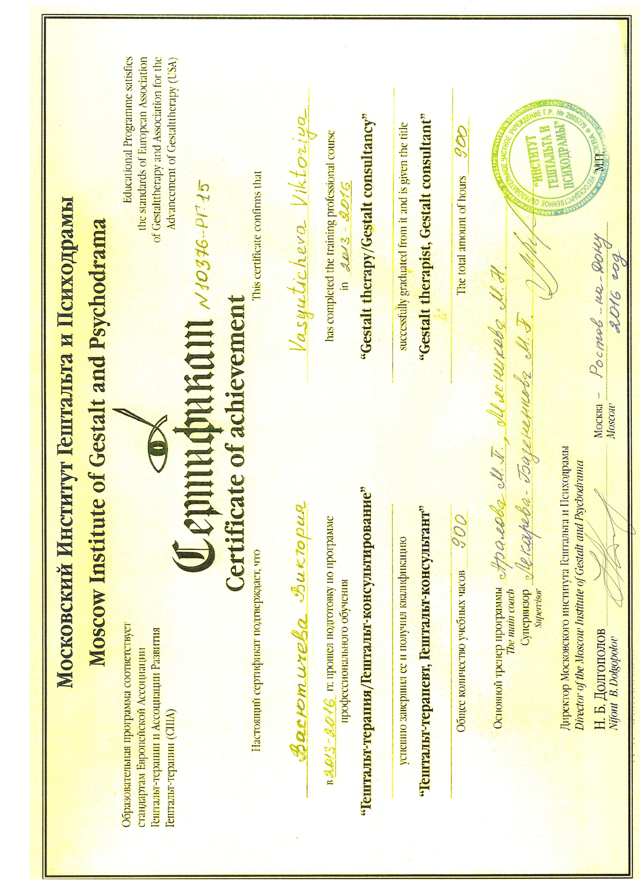
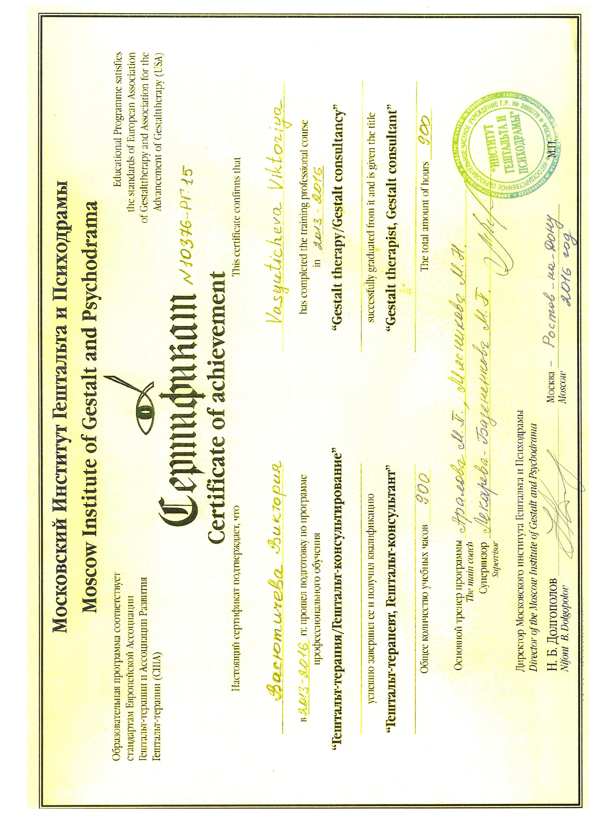

Васютичева Виктория
Психологическая помощь для детей и взрослых, детский и семейный психолог
Я – практикующий психолог, гештальт-терапевт, имеющий опыт профессиональной практики с 2011 года.
Свою профессиональную жизнь я связала с детской психологией.
Люблю выбранное дело всей душой.
Окончила Южный федеральный университет по специальности
педагог-психолог.
Работала в лучшем психологическом центре
г.Ростова-на-Дону.
Имею 8-летний опыт работы с детьми,
подростками и взрослыми.
Помогаю разрешать сложные вопросы, связанные с социализацией и
адаптацией ребёнка в современном мире.
Нахожу контакт с
любым ребенком.

В настоящее время провожу:
- индивидуальные консультации;
- долгосрочную терапию;
- диагностику познавательного и эмоционального развития;
- психологические тренинги для детей.
Я специализируюсь на детях, но консультирую и взрослых. Работаю школьным психологом и тренером в международной школе развития эмоционального интеллекта г. Москва.
В работе использую гештальт-подход, арт-терапию, игровую и песочную терапию.
Регулярно прохожу групповые и индивидуальные супервизии и интервизии, повышаю квалификацию по актуальным темам.
Оказываю помощь по следующим запросам:
детям и подросткам:
- нарушение поведения (агрессивность, гиперактивность, чрезмерная увлеченность гаджетами);
- воздействие травмирующих ситуаций, в том числе развода родителей, смерти близких;
- трудности в выражении чувств и эмоций;
- проблемы коммуникации с окружающими;
- проблемы общения у подростков;
- низкая самооценка;
- адаптация к детскому саду и школе;
- проверка готовности ребёнка 6-7 лет к обучению в школе;
- трудности обучения (неуспеваемость, низкая мотивация к обучению);
- детские страхи;
- задержки развития;
взрослым:
- страхи, тревожность, чувство вины и другие невыносимые эмоции;
- трудности в принятии решений, проблемы выбора, целеполагание и мотивация;
- проблемы коммуникации с окружающими;
- проблемы адаптации к новой обстановке и в новом коллективе;
- сложности в выстраивании границ в отношениях;
- низкая самооценка, неуверенность в себе, зависимость от чужого мнения;
- вопросы самоопределения, кризисные периоды в жизни;
- нарушение детско-родительских отношений.
Образование:
- высшее, 2014 год, Федеральное автономное образовательное учреждение высшего профессионального образования «Южный федеральный университет» город Ростов-на-Дону, присвоена квалификация педагог-психолог по специальности педагогика и психология;
- средне-профессиональное, 2008 год, Государственное образовательное учреждение среднего профессионального образования Ростовской области – Донской педагогический колледж, присвоена квалификация учитель начальных классов с дополнительной подготовкой в области психологии по специальности Преподавание в начальных классах;
Повышение квалификации:
- 2012 год, НОУ ДПО Институт практической психологии «Иматон», прошла обучение по программе семинара-тренинга «Помощь неблагополучным семьям. Технологии работы социально-реабилитационных центров» в объеме 48 часов;
- 2013 год, Государственное бюджетное образовательное учреждение дополнительного профессионального образования Ростовской области «Ростовский институт повышения квалификации и профессиональной подготовки работников образования», прошла повышение квалификации по проблеме: «Психологическая компетентность субъектов образования: моделирование, критерии оценки, в объеме 144 часов;
- 2013 год, Факультет психологии ЮФУ Ростовское отделение Российского психологического общества Южно-региональный гештальт-институт, участие в работе 15-ой научно-практической конференции «Области применения гештальт-подхода», в объеме 30 часов;
- 2014 год, Государственное бюджетное образовательное учреждение дополнительного профессионального образования Ростовской области «Ростовский институт повышения квалификации и профессиональной переподготовки работников образования», прошла обучение по программе дополнительного профессионального образования «Психология» по проблеме: Организация здоровьесохранного пространства ОУ в условиях реализации регионального проекта «Здоровьесберегающая школа», в объеме 144 часов;
- 2014 год, Южный федеральный университет Научно-образовательный центр «Диагностика.Развитие.Коррекция», повышала свою квалификацию в авторской школе-семинаре «Дифференциальная диагностика в системе психолого-педагогического сопровождения детей с ОВЗ», в объеме 24 часов;
- 2015 год, НОУ ДПО Институт практической психологии «Иматон», прошла обучение по программе повышения квалификации «Подготовка специалистов по сопровождению семей с детьми раннего возраста», в объеме 32 часов;
- 2013-2016 год, Московский институт гештальта и психодрамы, прошла подготовку по программе профессионального обучения «Гештальт-терапия/Гештальт-консультирование» в количестве 900 часов;
- 2015 год, Восточно-Европейская ассоциация арт-терапии, прошла обучение по программе «Основы психодинамической арт-терапии» в количестве 120 часов;
- 2020 год, Автономная некоммерческая организация дополнительного профессионального образования «Московская академия профессиональных компетенций» прошла повышение квалификации по программе «Педагог-психолог. Психокоррекционные технологии для детей с ОВЗ», в объеме 72 часа.
Дипломы и сертификаты

 



Формат работы:
Онлайн-консультация
Написать мне в Skype - vika.gestalt
Написать мне в WhatsApp
Написать мне в Telegram
Очная-консультация
г.Москва, м.Митино
Все консультации продолжительностью по 60 минут и стоимостью 1500 рублей
Занятия по развитию эмоционального интеллекта проводятся по адресу: г.Москва, м.Строгино, Исаковского ул., 6, корп. 1.
Подробная информация на ресурсе https://ei-kids.com/#school